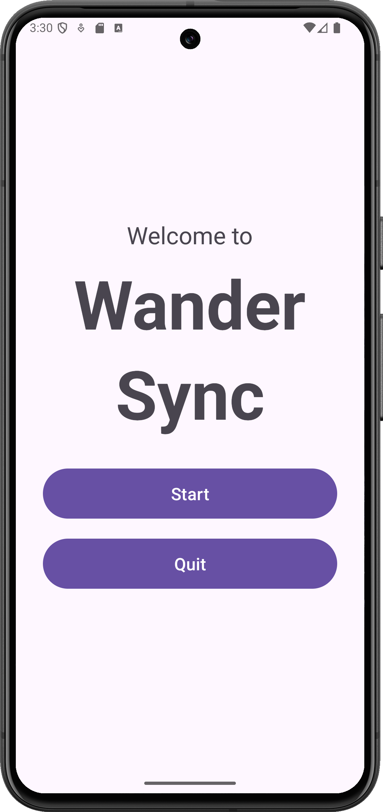

Welcome Screen
When you open the app, you can choose to quit or to start. When you click start, you will be taken to the login page.
When you open the app, you can choose to quit or to start. When you click start, you will be taken to the login page.
Now you can login to the app or register for an account. After this, you will be sent to the main app.
On this screen, you can open two drop downs to either log your travel time or calculate a vacation time.
On this screen, you can open a drop down to enter dining reservations for the app to make.
On this screen, you can open a menu to make and plan out new trips. You may also invite other users, and visualize your days planned.
On this screen, you can open a menu to make plans for hotels and other places to stay while on your trip.
On this screen, you can select trips to leave notes and reviews about, giving suggestions to other users.